비용은 재생성 횟수에서 나와요
영상은 숫자로 시작해요. Higgsfield가 공개한 자료로 계산하면 10분짜리 AI 드라마 한 편에 약 2천만 원어치 크레딧이 들어요. 10초짜리 한 컷을 건지려고 42번을 생성했다는 뜻이에요. Seedance 2.5 기준으로 한 컷에 30만 원이 넘게 들어간 셈이죠.
아래 화면 왼쪽 위의 '42번 생성' 라벨과 그 둘레에 깔린 썸네일들이 바로 그 시도 횟수를 보여 줘요. 가운데 한 장만 쓰이고 나머지는 버려진 결과예요.
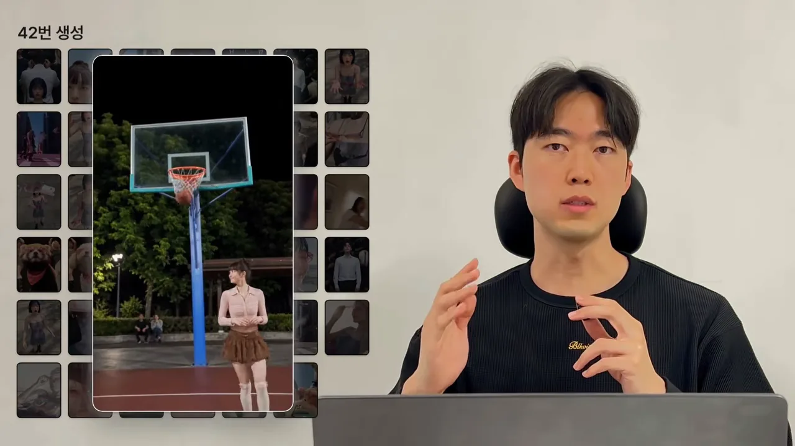
그래서 많은 사람이 더 싼 모델이나 플랫폼을 찾아다녀요. 발표자는 이게 답이 아니라고 봐요. 단가를 반으로 깎아도 한 컷에 42번을 뽑으면 크레딧은 그대로 새요. 결국 줄여야 할 건 재생성 횟수예요.
Genjutsu가 한 번에 안 되는 이유
예시로 든 건 Higgsfield의 Genjutsu예요. 화면 왼쪽 위에 'HIGGSFIELD GENJUTSU' 카드가 있고, 오른쪽에 'TURN ONE VIDEO INTO MANY'라는 문구가 보여요. 인스타에서 자주 보이는 바이럴 쇼츠를 내 인물이나 제품으로 바꿔 생성하도록 미리 설정해 둔 기능이에요.
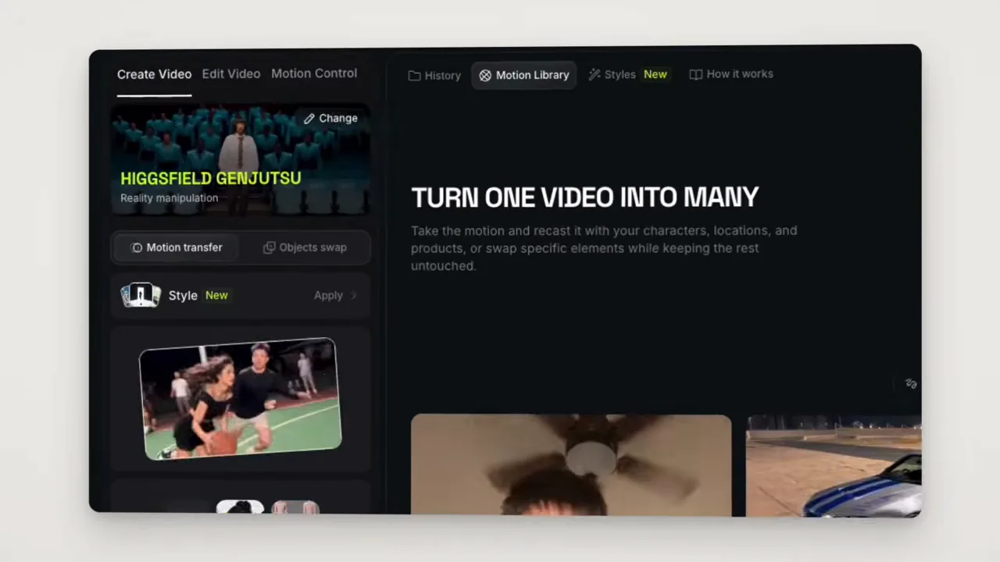
하지만 써 본 사람은 알듯이 한 번에 원하는 대로 나오지 않아요. 컷이 바뀌는 장면에선 조명과 체형이 달라져요. 아래 두 장이 동물 예시예요. 첫 장은 원본(털이 덥수룩하고 귀가 처진 개)과 넣은 이미지(분홍 선글라스를 쓴 조랑말)예요.
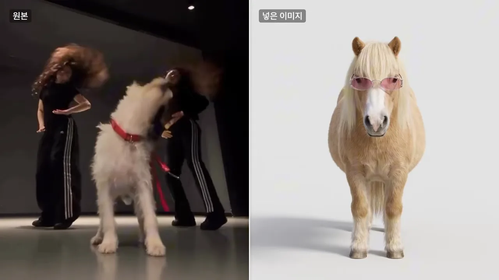
둘째 장 오른쪽 'Genjutsu 결과'를 보면 조랑말의 털과 선글라스는 들어갔지만 머리 모양과 귀가 원본 개를 따라갔어요. 발표자 말대로 귀가 큰 동물을 다른 동물로 바꿔도 원본의 귀를 따라가 버린 거예요.
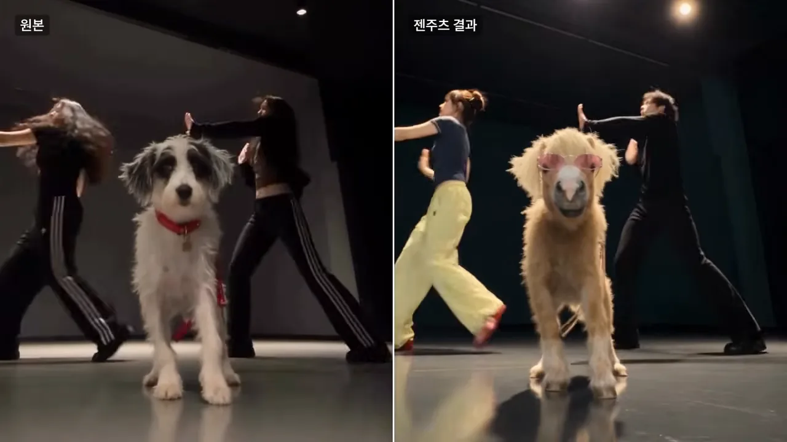
원인은 맥락이 섞이는 것이에요. 원본 영상의 생김새, 내가 넣은 이미지, 프롬프트 세 가지가 한꺼번에 들어가니 AI가 무엇을 정답으로 삼을지 몰라 섞어 버려요. 그래서 될 때까지 다시 뽑게 되고, 그게 다 비용이 돼요.
프리비즈로 맥락 걷어 내기
발표자는 많은 사람이 프리비즈를 오해한다고 말해요. 프리비즈가 꼭 블렌더로 만드는 회색 영상은 아니에요. 프리비주얼라이제이션의 줄임말로, 영화에서 촬영 전에 카메라와 동선을 미리 그려 보듯 미리 시각화하는 장치예요. 어떤 방식을 쓰든 필요 없는 맥락은 걷어 내고 원하는 맥락만 남기면 프리비즈예요.
Wan 3.0으로 원본을 마네킹 영상으로
가장 빠른 방법은 영상 AI로 원본을 바로 프리비즈로 바꾸는 거예요. 화면 왼쪽 위 'Wan 3.0' 라벨 아래 Higgsfield 생성 화면이 보여요. 가운데 하이라이트된 프롬프트가 핵심이에요.
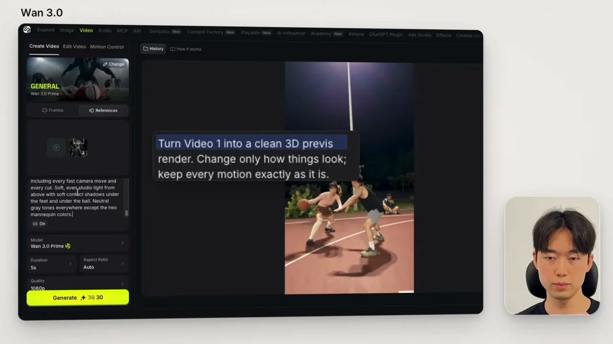
Turn Video 1 into a clean 3D previs render.
Change only how things look; keep every motion exactly as it is.뜻은 '영상 1을 깔끔한 3D 프리비즈 렌더로 바꾸되, 겉모습만 바꾸고 움직임은 하나도 건드리지 마라'예요.
그러면 외모도 옷도 배경도 없는 마네킹 영상이 나와요. 남는 건 움직임, 카메라, 컷뿐이라 섞일 생김새가 없어요. 여기에 얼굴·제품·장소 사진을 따로 붙이고 '이 영상은 움직임만 참고하고 겉모습은 가져오지 마라'고 적은 뒤 Seedance 2.5로 생성해요.
아래 세 칸이 그 흐름이에요. 왼쪽 원본에서 덩크하는 사람이, 가운데 프리비즈에선 파란 마네킹이 되고, 오른쪽 결과에선 분홍 상의와 갈색 치마를 입은 다른 인물이 같은 자세로 점프해요.
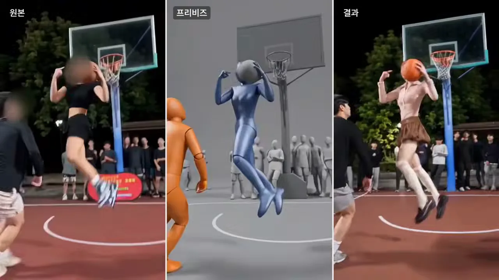
비용도 비교했어요. Genjutsu로 원하는 결과가 나올 때까지 돌리면 200~300크레딧을 쏟아부었을 거라고 해요. 이 방식은 프리비즈 변환 14크레딧, Seedance 생성 63크레딧으로 합쳐서 77크레딧이에요. 화면에도 '77 크레딧' 옆에 프리비즈와 Seedance 2.5 결과가 나란히 있어요.
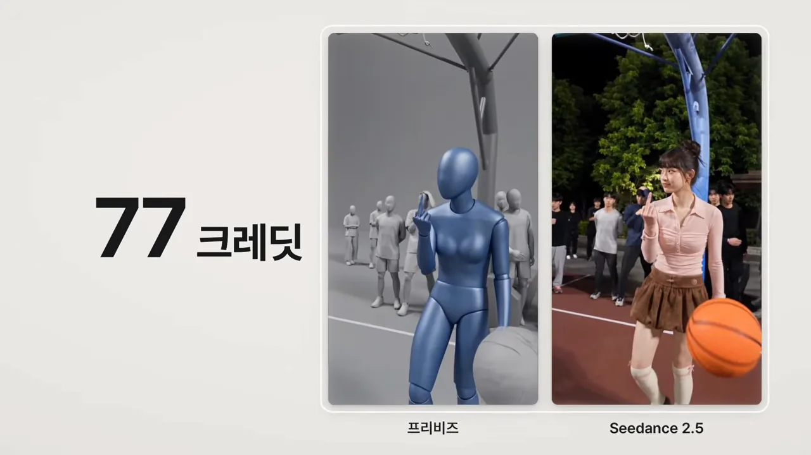
영상 AI 프리비즈의 한계
문제는 고칠 수 없다는 거예요. 원본에서 여자가 점프하며 손가락 욕을 하는데, 발표자는 그 손에 선글라스를 들게 하고 싶어 해요. 착지해서는 선글라스를 쓰고 어깨를 털며 잘난 척하는 장면으로요. 원본에 없는 움직임이라 프리비즈부터 바꿔야 해요. 영상 AI로 고칠 때마다 영상 크레딧을 또 쓰면 프리비즈를 만드는 의미가 없어요.
블렌더 프리비즈와 노하우 세 가지
그래서 블렌더를 써요. 블렌더를 직접 다룰 필요는 없어요. ChatGPT 앱 안의 Codex에서 GPT-6 Astra에게 말로 시키면 알아서 만들어 줘요. 고칠 때도 영상 크레딧은 안 들고 Astra의 토큰만 조금 써요.
다만 '블렌더로 프리비즈 만들어 줘'라고만 하면 토큰은 토큰대로 쓰고 Seedance는 계속 다시 뽑게 된다고 해요. 그래서 발표자가 테스트하며 정리한 노하우 세 가지를 무료 스킬에 넣어 뒀어요.
스킬 설치와 첫 요청
설치는 설명란에서 받은 스킬 파일을 Codex 대화창에 끌어다 놓고 '이 스킬 설치해 줘'라고 하면 끝이에요. 아래 화면 오른쪽 아래 모델 선택란에 'GPT-6 Astra Ultra'가 보여요. 영상에서 '아스트라'라고 부르는 게 이 모델이에요.
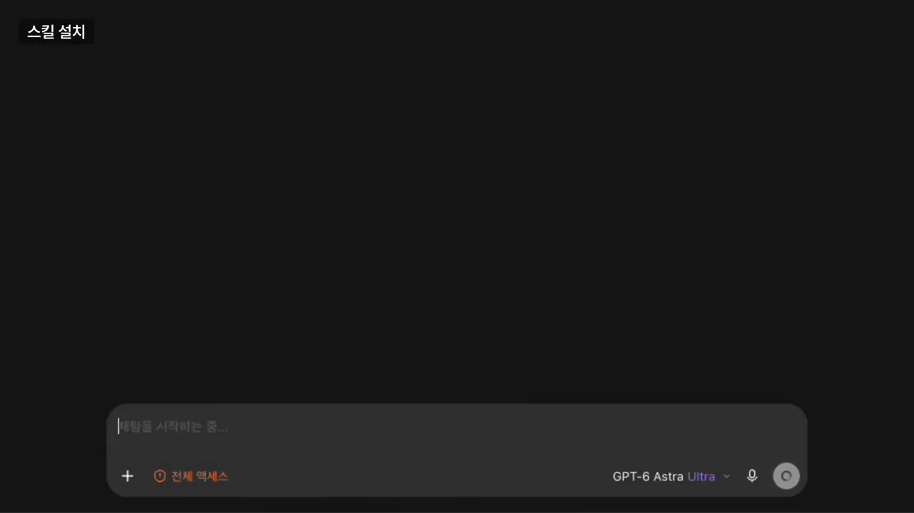
새 채팅을 열고 원본 영상과 함께 나중에 최종 영상을 만들 때 쓸 사진도 같이 올려요. 발표자는 앞·옆·뒤 각도가 담긴 얼굴 시트, 앞뒤 착장 시트, 농구장 사진을 넣었어요.
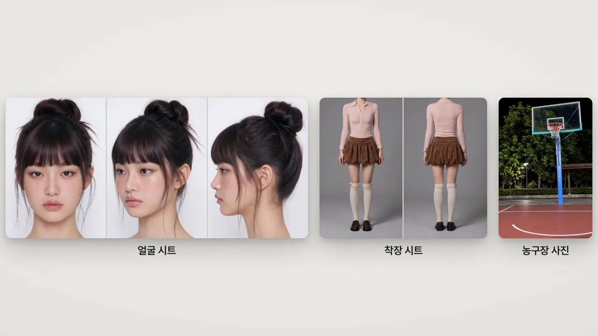
그리고 스킬을 불러 '이 영상을 프리비즈로 만들어 줘. 여자는 이 얼굴·착장 시트로, 남자 수비수는 다른 남자로, 배경은 이 농구장으로 바꿀 거야'라고 말해요. Astra는 원본을 프레임 단위로 쪼개서 몇 초에 누가 어디서 어디로 움직이고 카메라가 어떻게 따라가는지 읽어 내요. 그다음 블렌더로 프리비즈 영상까지 만들어요. 아래가 Astra가 만든 블렌더 파일을 연 화면이에요.
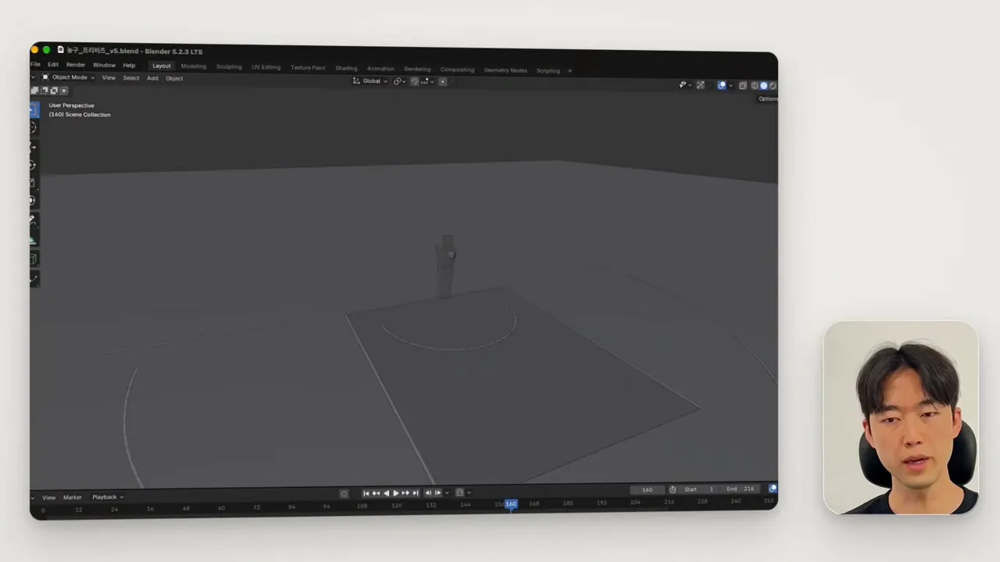
노하우 1 · 빼기
AI가 블렌더를 잘 다룬다니 프리비즈를 고퀄리티로 만들고 싶어지지만, 그러면 Astra 토큰만 많이 들어요. 오히려 생김새를 넣지 않아야 해요. 아래 화면처럼 사람은 머리·상체·하체 세 덩어리로만 만들어요.
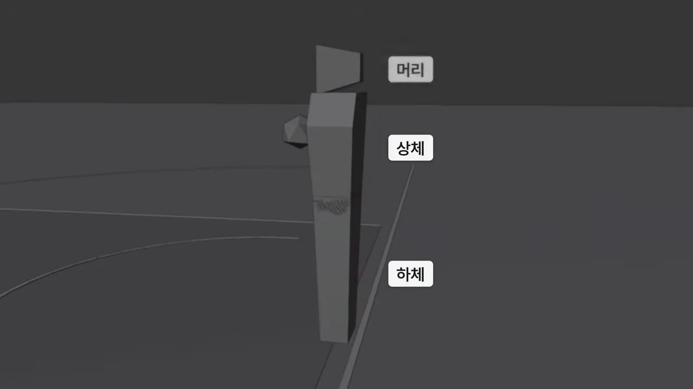
제품도 실제 크기 정도의 상자 하나면 돼요. 이유는 Seedance에 있어요. 어설프게 자세히 만들면 Seedance가 그 형태를 그대로 따라가 버려요. 대충 만든 손 모양이 결과에 그대로 찍히는 식이에요.
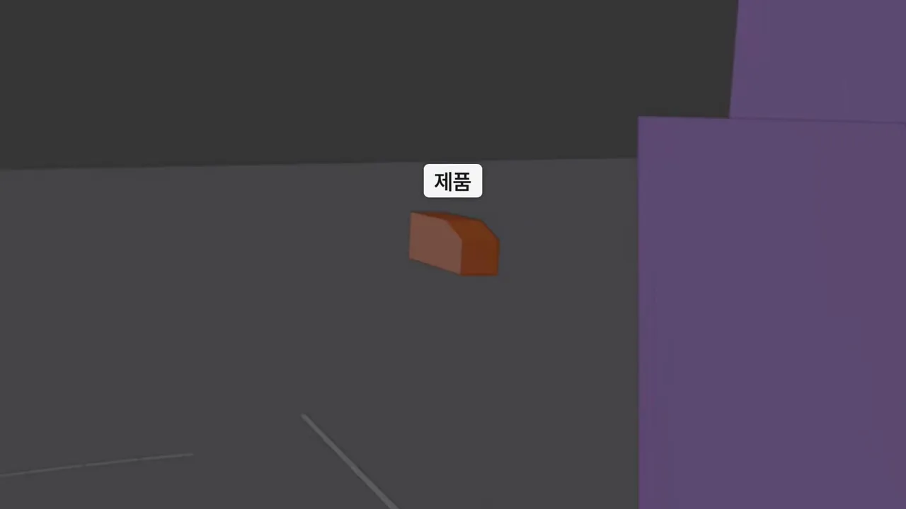
노하우 2 · 색으로 표시
덩어리만 봐서는 누가 누군지 알 수 없어요. 그래서 바꿀 대상마다 더미에 다른 색을 칠해요. 아래 화면에서 보라 덩어리에 '여자', 노란 덩어리에 '수비수', 뒤쪽 청록 덩어리들에 '관중' 라벨이 붙어 있어요.
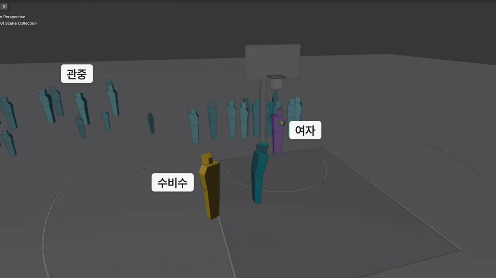
앞에서 나중에 넣을 사진을 미리 알려 준 게 이 때문이에요. 얼굴·착장 시트를 입힐 여자는 보라, 다른 사람으로 바꿀 수비수는 노랑, 관중은 청록으로 따로 칠해 둬야 Seedance가 어느 사진을 누구에게 입힐지 헷갈리지 않아요. 한 가지 더, 그 자리에 실제로 들어갈 색과 겹치면 안 돼요. 노란 옷을 입을 사람을 노랑으로 칠하면 색 표시인지 옷 색인지 구분이 안 되니까요.
노하우 3 · 나누기
마지막으로 카메라를 넣을 때 세 번째 노하우가 나와요. 맥락마다 맡을 곳을 나눠 주는 거예요. 영상에선 말로만 설명해서 아래에 그려 봤어요.
프리비즈에는 위치, 각도, 타이밍만 담고 얼굴과 옷은 사진이, 손·표정·질감은 텍스트가 맡아요. 이렇게 완성된 프리비즈를 원본과 나란히 보면 카메라와 동선은 물론 관중이 서 있던 자리까지 그대로 따라왔다고 해요.
원하는 동작으로 고치고 한 번에 생성하기
여기부터가 블렌더를 쓰는 진짜 이유예요. 원본과 다른 동작을 만들 수 있거든요. 프리비즈가 완성되면 Astra가 '고칠 곳이 있나요?'라고 물어요. 바꾸고 싶은 부분을 말로 묘사하면 돼요.
아래 화면 위쪽에 Astra가 정리한 색 규칙(보라=여자, 노랑=수비수, 청록=관중·마지막 통행인, 연두=공)과 질문이 보여요. 그 아래 입력칸에 발표자가 선글라스 사진을 붙이고 '점프할 때 주머니에서 이 선글라스를 꺼내 들고, 착지해서 쓰고 어깨를…'이라고 쓰는 중이에요.
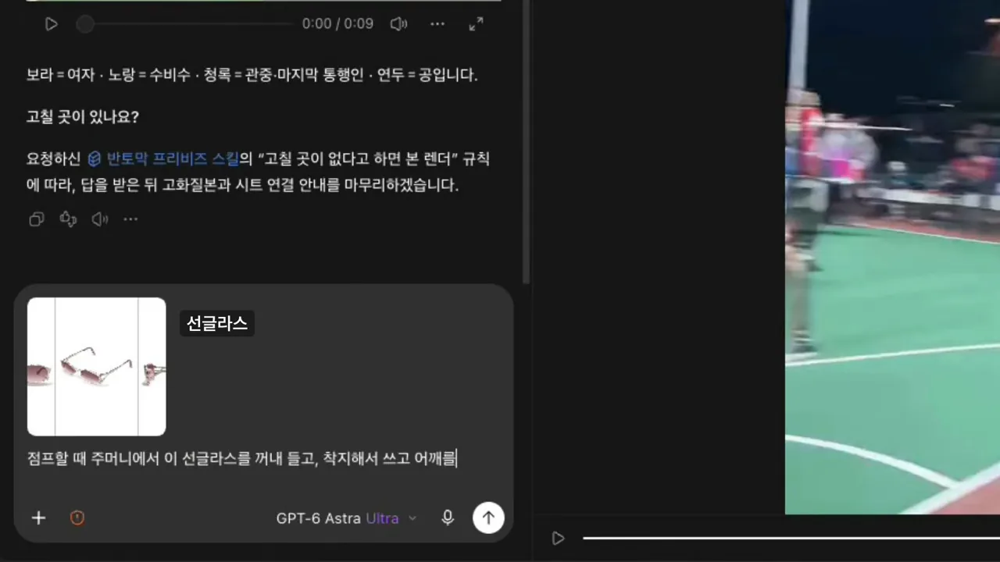
Astra는 선글라스 실제 크기만 한 번 물어봐요. 그리고 앞부분은 그대로 두고 점프하는 손과 착지 뒤 동작만 바꾼 새 버전을 내요. 아래 '수정 전'과 '수정 후'를 비교하면 수정 후 보라 덩어리 손 근처에 흰 테두리로 표시한 작은 주황 상자가 생겼어요. 그게 선글라스예요.
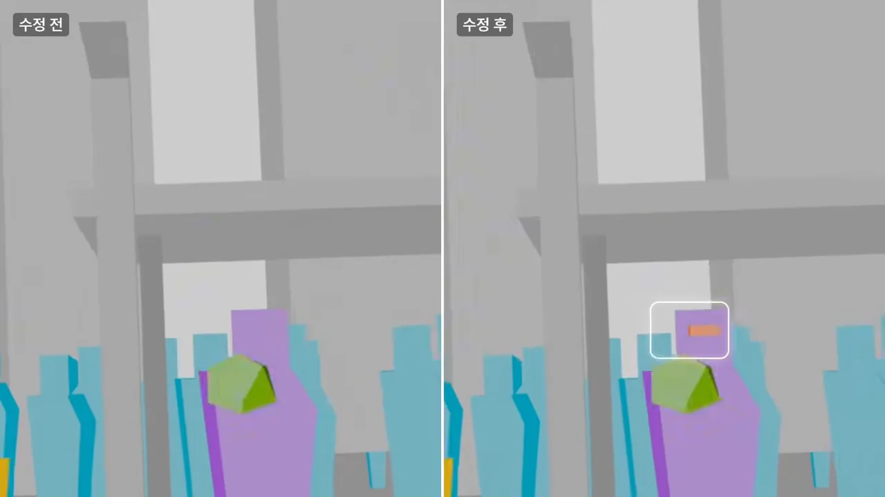
그런데 주머니에서 꺼낼 땐 선글라스가 접혀 있다가 착지해서 펴야 해요. 그래서 '꺼낼 때는 접힌 상태로 들고 있다가 착지해서 펼쳐 쓰게 해 줘'라고 한 줄 더 고치고 접힌 선글라스 사진도 넣었어요. 아래 'v8' 화면 아래쪽 흰 테두리 안에 접힌 크기 그대로 줄어든 주황 상자가 보여요.
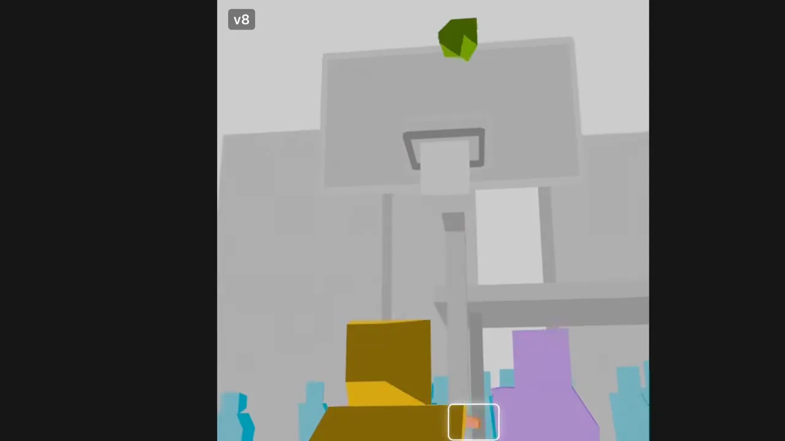
여기서 고치는 건 영상 크레딧이 들지 않아요. 마음에 들 때까지 한 줄씩 고치면 돼요. 영상 크레딧은 마지막 생성 한 번에만 써요.
완성 프롬프트와 생성
최종 확정하면 Astra가 생성할 때 이미지를 몇 번째로 올릴지와 그대로 붙여 넣을 완성 프롬프트를 써 줘요. 아래는 그 프롬프트 일부예요. 'KEEP CONSISTENT' 아래에 얼굴·머리·옷은 @face_model과 @outfit_model을 따르고, 선글라스는 @prod_sunglasses 그대로, 5.05초까지 접혀 있다가 착지 뒤 펴진다는 규칙이 적혀 있어요. 아래쪽 REFERENCES에는 @Image1, @Image2, @Image3이 각각 무엇을 맡는지 적혀 있어요.
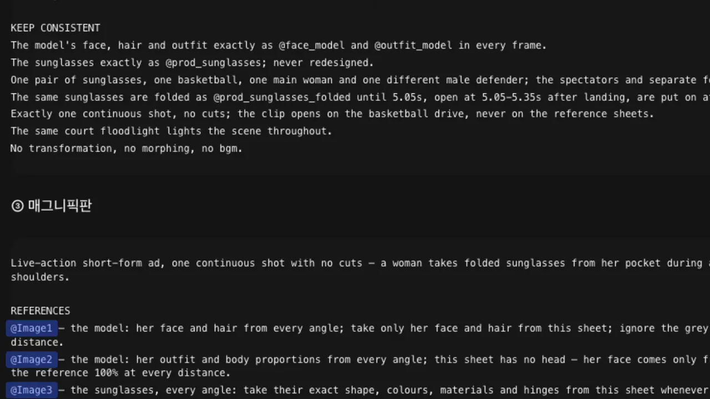
화면에 '③ 매그니픽판'이라는 제목도 보여요. 영상에서 따로 설명하진 않지만 같은 결과를 다른 플랫폼에서 돌릴 때 쓸 버전을 함께 써 주는 것으로 보여요.
이제 Higgsfield로 와서 고친 프리비즈, 얼굴 시트, 착장 시트, 선글라스 사진 두 장, 농구장 사진을 순서대로 올리고 프롬프트를 붙여요. 아래 화면 위쪽 썸네일 줄이 그 이미지들이고, 모델은 Seedance 2.5예요. 프롬프트 본문에 'deepcyan figures are spectators… the lime lump is the basketball; the orange block is the sunglasses'처럼 색마다 무엇인지 적혀 있어요.
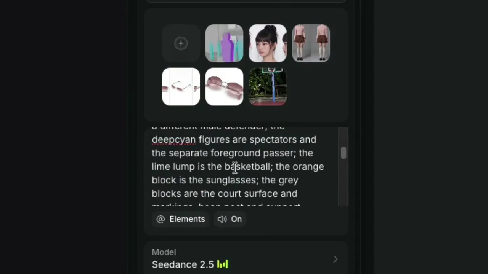
프롬프트에 정리된 색의 뜻을 표로 옮기면 이래요.
| 프리비즈 색 | 대상 | 입힐 자료 |
|---|---|---|
| 보라 | 주인공 여자 | 얼굴 시트, 착장 시트 |
| 노랑 | 남자 수비수 | 다른 남자로 바꿈 |
| 청록 | 관중, 마지막 통행인 | 따로 지정 없음 |
| 연두(라임) | 농구공 | — |
| 주황 | 선글라스 | 선글라스 사진, 접힌 선글라스 사진 |
카메라와 동선은 '프리비즈를 그대로 따르라'는 한 줄로 끝내고, 손동작처럼 프리비즈가 못 담는 것만 따로 적어요. 이미지 순서가 바뀌어 태그가 어긋났다면 손으로 한 번 점검한 뒤 생성을 눌러요.
결과
아래 세 칸에서 원본의 동선과 카메라 각도는 그대로예요. 가운데 프리비즈의 보라 덩어리 손에 주황 조각이 있고, 오른쪽 결과에서 착장 시트의 옷을 입은 여자가 같은 자리에서 손을 얼굴 쪽으로 가져가요. 발표자는 원본에 없던 선글라스 쓰는 장면이 들어갔고, 주황 상자 자리에 실제 선글라스가 잘 들어갔다고 정리해요.
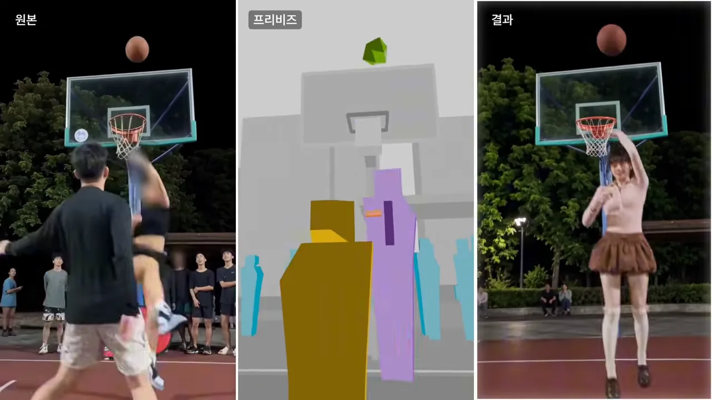
블렌더가 아니어도 돼요
발표자의 결론은 이래요. 비용은 모델 값이 아니라 재생성 없이 한 번에 뽑을 수 있느냐에 달려 있어요. 프리비즈가 왜 통하는지 알면 꼭 블렌더가 아니어도 돼요. 아래 화면은 같은 원본을 세 가지 방식으로 프리비즈로 만든 거예요. 왼쪽 '영상 AI'는 마네킹 영상, 가운데 'Blender'는 색 덩어리, 오른쪽은 책장 앞에서 폰으로 직접 찍은 장면이에요.
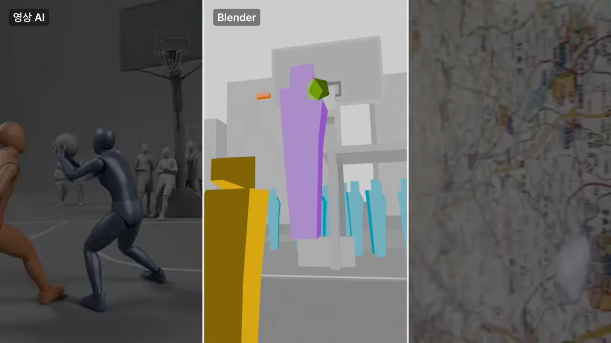
| 상황 | 프리비즈 만드는 방법 |
|---|---|
| 원본 연출을 그대로 쓸 때 | 영상 AI(Wan 3.0 등)로 원본을 바로 프리비즈로 바꿔요 |
| 카메라나 컷, 동작을 바꾸고 싶을 때 | 블렌더로 만들어요 (Astra에게 말로 시켜요) |
| 그 밖에 | 폰으로 직접 찍어서 만들어도 돼요 |
이미지에도 같은 원리
이 원리는 이미지에도 그대로 통해요. 초안 단계에선 라벨이나 얼굴이 바뀌어도 신경 쓰지 않고 연출만 보고 뽑아요. 마음에 드는 연출이 나오면 그걸 프리비즈 이미지로 바꿔요. 아래 왼쪽 '프리비즈'는 차 보닛에 누운 회색 인물 모형이고, 오른쪽 '최종'은 제품·모델·배경·무드 이미지를 넣어 실사화한 결과예요.
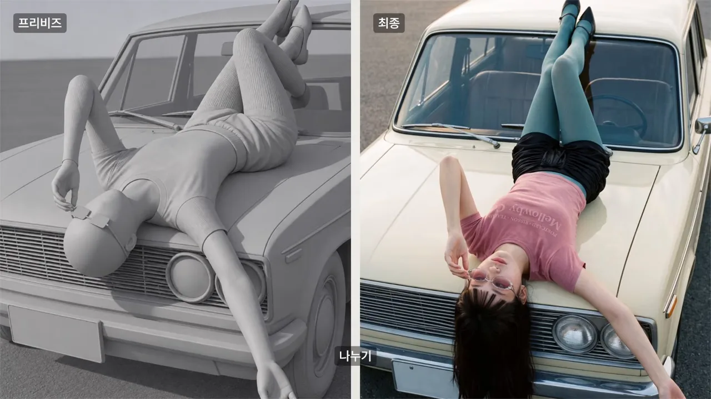
프리비즈로 안 되는 것
한계도 분명히 말해요. 생김새는 결국 넣는 이미지가 정해요. 아래 화면처럼 프리비즈 옆에 들어갈 얼굴·착장 이미지가 좋아야 결과도 좋아요. 무료 스킬은 어떤 이미지를 준비할지까지는 정리해 주지만, 제품·모델·배경 이미지를 컷마다 똑같이 나오게 만드는 건 직접 해야 해요.
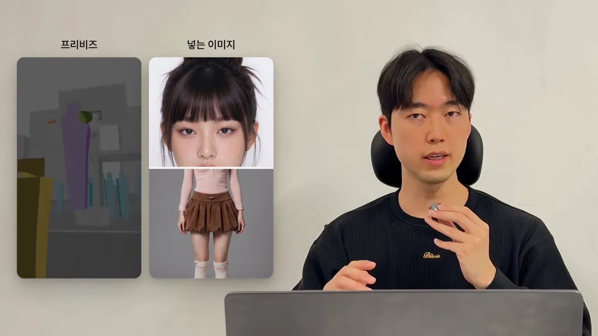
상황마다 응용할 점도 있어요. 제품이 한 바퀴 도는 영상이면 프리비즈 상자 앞뒤를 다른 색으로 칠해야 회전이 정확히 읽혀요. 아래 상자는 면마다 연두와 분홍으로 나뉘어 있어요. 또 앞모습 사진만 넣으면 Seedance가 본 적 없는 뒷모습을 지어내니 뒷모습 사진도 같이 넣어야 해요.
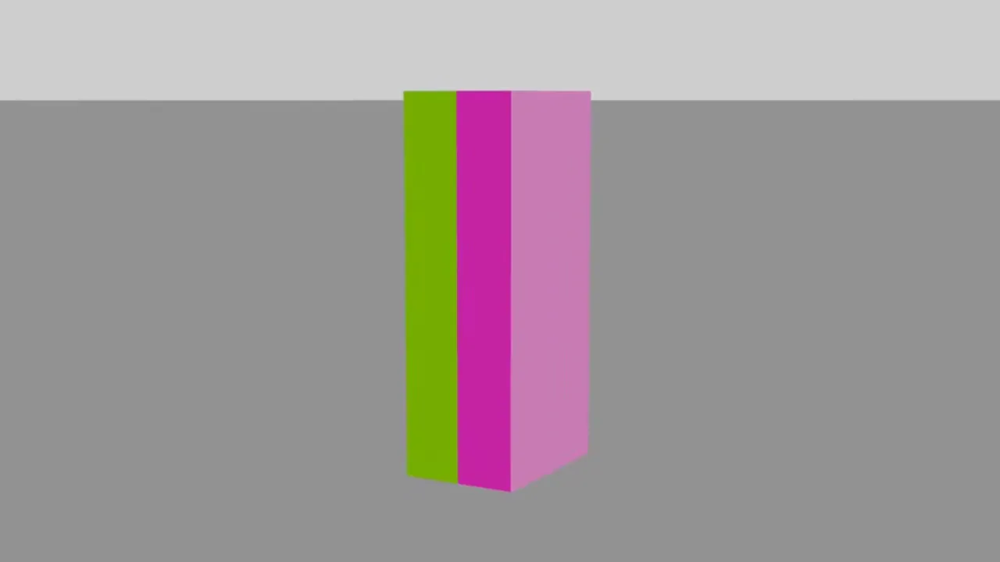